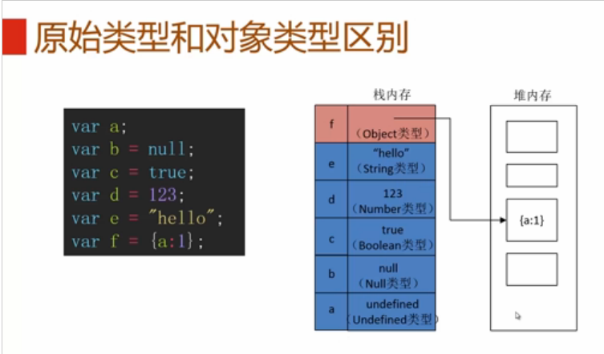
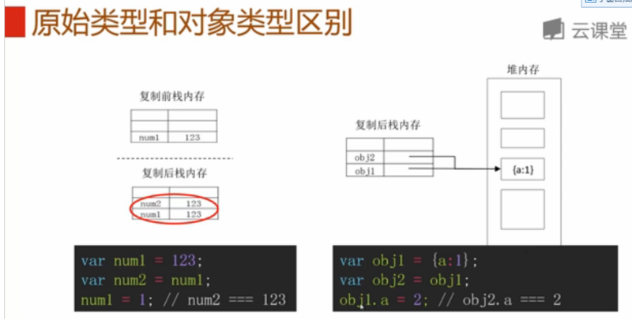

类型
1.js中有哪些数据类型，并解释清楚原始数据类型和引用数据类型
js中共有null,undefined, string,number,boolean,object六种数据类型。
原始数据类型: null,undefined, string,number,boolean
引用数据类型:object
两者的区别：
1）值存储方式不同：
原始数据类型：将变量名和值都存储在栈内存中
引用数据类型：将变量名存储在栈内存中，将值存储在堆内存中，并在栈内存中存储值的地址，该地址指向堆内存中的值。

2）赋值方式不同：
当给b赋予另一个a的值
若a值为原始数据类型，直接在栈内存中生成b值，两个变量以后进行值改变不会相互影响
若a值为引用数据类型，赋予b变量的是值地址，通过这个地址，两者指向的其实是堆内存中的同一个值，所以以后a,b任一变量对值进行改变，会直接影响另一个变量的值

2. 解释清楚 null 和 undefined
null表示一个标识被赋值了，且该标识赋值为“空值”,从逻辑角度来看，null值表示空对象指针；
undefined表示声明了标识，但没有给标识赋值。
3. 如何复制一个对象的值？
function cloneObject(object){
var newObject = new Object();
for(var i in object){
newObject[i] = object[i];
}
return newObject;
}
4. js在什么时候会进行隐式类型转换，转换的结果？
数值运算
if
.调用方法或属性
!和!!
5. 类型识别的方法？
typeof a
可以判别标准类型，除了null之外
typeof 1 返回结果："number" typeof {} 返回结果:"object"
不能判别具体的对象类型，除了function之外
typeof [1] 返回结果:"object" typeof function(){} 返回结果:"function"
a instanceof b
可以判别内置对象类型
[] instanceof Array 返回结果：true new String() instanceof String 返回结果：true
不能判别原始类型值
'a' instanceof String 返回结果：false
可以判别自定义对象类型
function Point(x,y){
this.x = x;
this.y = y
}
var c = new Point(1,2)
c instanceof Point
返回结果：true
a.constructor
可以判别标准数据类型（undefined和null除外）
'123'.constructor == String 返回结果：true
可以判别具体的内置对象类型
[1,2].constructor == Array 返回结果：true
可以判别自定义对象类型
function Point(x,y){
this.x = x;
this.y = y
}
var c = new Point(1,2)
c.constructor == Point
返回结果：true
Object.prototype.toString.call(a)
可以判别标准数据类型
Object.prototype.toString.call(1)返回结果:"[object Number]" Object.prototype.toString.call(undefined) 返回结果:"[object Undefined]"
可以判别内置对象类型
Object.prototype.toString.call([a]) 返回结果:"[object Array]"
不能判别自定义对象类型
function Point(x,y){
this.x = x;
this.y = y
}
var c = new Point(1,2)
Object.prototype.toString.call(c)
返回结果:"[object Object]"
工作中可以写一个函数方便判定
function type(obj){
return Object.prototype.toString.call(obj).slice(8,-1)
}
type('a') 返回结果: "String" type([a]) 返回结果: "Array"
函数
1. 函数里的this什么含义，什么情况下，怎么用?
谁调用的方法或者属性，this就指向谁
如果没有被谁调用，this指向window
=============================================================================================
2. bind,call,apply方法的使用，什么区别？什么时候用?
javascript中apply、call和bind的区别
在JS中，这三者都是用来改变函数的this对象的指向的，他们有什么样的区别呢。
在说区别之前还是先总结一下三者的相似之处：
1、都是用来改变函数的this对象的指向的。
2、第一个参数都是this要指向的对象。
3、都可以利用后续参数传参。
那么他们的区别在哪里的，先看一个例子。
var xw = {
name : "小王",
gender : "男",
age : 24,
say : function() {
alert(this.name + " , " + this.gender + " ,今年" + this.age);
}
}
var xh = {
name : "小红",
gender : "女",
age : 18
}
xw.say();
复制代码
本身没什么好说的，显示的肯定是小王 ， 男 ， 今年24。
那么如何用xw的say方法来显示xh的数据呢。
对于call可以这样：
xw.say.call(xh);
复制代码
对于apply可以这样：
xw.say.apply(xh);
复制代码
而对于bind来说需要这样：
xw.say.bind(xh)();
复制代码
如果直接写xw.say.bind(xh)是不会有任何结果的，看到区别了吗？call和apply都是对函数的直接调用，而bind方法返回的仍然是一个函数，因此后面还需要()来进行调用才可以。
那么call和apply有什么区别呢？我们把例子稍微改写一下。
var xw = {
name : "小王",
gender : "男",
age : 24,
say : function(school,grade) {
alert(this.name + " , " + this.gender + " ,今年" + this.age + " ,在" + school + "上" + grade);
}
}
var xh = {
name : "小红",
gender : "女",
age : 18
}
复制代码
可以看到say方法多了两个参数，我们通过call/apply的参数进行传参。
对于call来说是这样的
xw.say.call(xh,"实验小学","六年级");
复制代码
而对于apply来说是这样的
xw.say.apply(xh,["实验小学","六年级"]);
复制代码
看到区别了吗，call后面的参数与say方法中是一一对应的，而apply的第二个参数是一个数组，数组中的元素是和say方法中一一对应的，这就是两者最大的区别。
那么bind怎么传参呢？它可以像call那样传参。
xw.say.bind(xh,"实验小学","六年级")();
复制代码
但是由于bind返回的仍然是一个函数，所以我们还可以在调用的时候再进行传参。
xw.say.bind(xh)("实验小学","六年级")
+++++++++
三、常用场景
1、数组之间追加
var array1 = [12, "foo", {name: "Joe"}, -2458];
var array2 = ["Doe", 555, 100];
Array.prototype.push.apply(array1, array2);
/*Array.prototype.push.apply(array1,array2)*/
/* array1 值变为 [12 , "foo" , {name:"Joe"} , -2458 , "Doe" , 555 , 100] */
2、获取数组中的最大值和最小值
var numbers = [5, 458, 120, -215];
var maxInNumbers = Math.max.apply(Math, numbers); //458
View Code
3、验证是否是数组（前提是toString()方法没有被重写过）
function isArray(obj){
return Object.prototype.toString.call(obj) === '[object Array]';
}
View Code
4、类（伪）数组使用数组方法
var domNodes = Array.prototype.slice.call(document.getElementsByTagName("*"));
View Code
5、数字求和
function sum() {
var numberSum = Array.prototype.reduce.apply(arguments, [function (prev, next) {
return prev + next;
}]);
console.log(numberSum);
}
sum(1, 2, 3);
+++++
===================================================================================
3. 函数curry化
函数curry化是什么意思？
把接受多个参数的函数转换为接受单一参数的函数，且函数可以持续接收参数
将一个复杂的问题片段化，使之进行简化
======================22222222222222222222222222222222222222222222222=============================
3. 数组和对象有哪些原生方法，列举一下，分别是什么含义，比如链接两个数组用哪个方法，删除数组的指定项。
javascript之Array类：
创建js数组两种方式：
var arr = []; 或
var arr = new Array();
()里可以指定长度，也可以不指定，指不指定都无所谓，
因为js里的数组长度是可变的
concat(arr1,arr2,arr3......arrx):js数组合并,返回合并后的新数组,至少需要传递一个数组，也可以传递多个数组
var arr1 = new Array(3);
arr1[0] = "George";
arr1[1] = "John";
arr1[2] = "Thomas";
arr1[3] = "Jeery";
var arr2 = new Array(3);
arr2[0] = "James";
arr2[1] = "Adrew";
arr2[2] = "Martin";
var arr3 = new Array(3);
arr3[0] = "Java";
arr3[1] = "C#";
arr3[2] = "PHP";
var arr4 = arr1.concat(arr2,arr3);
alert(arr4);
join():将数组元素按指定的分隔符拼接成一字符串返回，默认分隔符为英文逗号
var arr = new Array(3)
arr[0] = "George";
arr[1] = "John";
arr[2] = "Thomas";
arr[3] = "Jeery";
arr.join(".");
sort(fn):数组排序,默认是按英文字母的ASC码升序排列，比如apple排在orange前面，其实
sort还可以接收一个参数，该参数function类型，有点类似于java里的比较器的意思，
就是说如果不想按默认的比较规则来排序，就必须提供一比较函数，该函数有两个参数a、b,
如果返回值小于0，则a排在b前面
如果返回值大于0，则b排在a前面
如果返回值等于0，则a、b位置不变
var arr = new Array(6);
arr[0] = 5;
arr[1] = 23;
arr[2] = 4;
arr[3] = 18;
arr[4] = 88;
arr[5] = 10;
arr.sort(sortNumber);
function sortNumber(a, b)
{
return a - b;
}
pop()：删除数组的最后一个元素，把数组长度减 1，并且返回它删除的元素的值。
如果数组已经为空，则 pop() 不改变数组，并返回 undefined 值。
var arr = new Array(6);
arr[0] = 5;
arr[1] = 23;
arr[2] = 4;
arr[3] = 18;
arr[4] = 88;
arr[5] = 10;
var a = arr.pop();
alert(a);
for(var x in arr){
alert(arr[x]);
}
push(n1,n2,n3,....nx):向数组末尾添加一个或多个元素，并返回添加后数组的长度，
注意，此方法操作的是原数组对象，不会创建副本。此方法可以接收多个参数，
至少要传递一个参数
var arr = new Array(6);
arr[0] = 5;
arr[1] = 23;
arr[2] = 4;
arr[3] = 18;
arr[4] = 88;
arr[5] = 10;
var len = arr.push(44,80);
alert(len);
for(var x in arr){
alert(arr[x]);
}
reverse():颠倒数组中元素的顺序,即如果原来数组元素是1,2,3,4,5,调用reverse()后，
元素顺序为5,4,3,2,1,注意，此方法直接操作的是原数组对象，不会创建副本。
var arr = [3,5,11,6,90,0];
arr.reverse();
for(var x in arr){
alert(arr[x]);
}
shift():删除数组的第一个元素，并返回它删除的那个元素
如果数组已经为空，则 shift() 不改变数组，并返回 undefined 值
注意，此方法直接操作的是原数组，不会创建副本对象
var arr = [3,5,11,6,90,0];
var a = arr.shift();
alert(a);
for(var x in arr){
alert(arr[x]);
}
slice(start,end):用于截取start和end之间的数组元素并存入新数组返回
注意，此方法不会修改原数组，会创建数组副本对象。
如果end未指定，则表示直接从start直到数组末尾，
如果start或end为负数，表示从后面开始算起，比如
-1，表示从倒数第一个元素算起，以此类推。
截取的区间范围是[start,end),前闭后开区间,且start必须小于end
如果没找到一个元素，则返回一个空数组即数组的长度为0
var arr = [3,5,11,6,90,0];
var a = arr.slice(2,4);
alert(a.join());
splice(index,howmany,element1,.....,elementX):
用于删除从 index 处开始的零个或多个元素，并且用参数列表中声明的一个或
多个值来替换那些被删除的元素，并返回刚刚删除的元素组成的新数组。
注意：此方法是直接操作的原数组对象，不会创建对象副本
第一个参数：表示从index位置开始删除，index从零开始计算
第二个参数：表示从index位置开始，往后连续删除几个元素，前两个参数是必需的，后面的参数是可选的。
后面的参数是用添加的元素，添加的元素从index处开始添加，如果后面添加的元素个数大于
实际删除的元素个数，多出几个，后面的元素就往后移动几位。比如你实际删除了4个元素，
而实际你后面添加了6个元素，那最终会从index处开始添加6个元素，由于前面只删除4个元素，
位置不够，所以后面的元素会自动往后移动2位。
var arr = [3,5,11,6,90,0,15,57,70,20];
var a = arr.splice(0,4,1,2,3,4,5,6);
alert(a);
for(var x in arr){
alert(arr[x]);
}
unshift(element1,.....,element):
向数组开头添加一个或多个元素，并返回添加后的数组长度。至少要传一个参数。
注意此方法是直接操作原数组，最后添加的元素index=0,以此类推。
var arr = [3,5,11,6,90,0,15,57,70,20];
arr.unshift(22,23,24);
alert(arr.toString());
alert(arr.length);
扩展Array的函数：
Array.prototype.indexOf = function(o){
if(this[i] == o){
return i;
}
}
return -1;
}
Array.prototype.remove = function(o){
var index = this.indexOf(o);
if(index != -1){
this.splice(index,1);
}
return this;
}
var arr = [3,5,11,6,90,0,15,57,70,20];
arr.remove(90);
alert(arr.toString());
alert(arr.length);
js中Number类常用方法：
toFixed():将数字四舍五入为指定小数位数的数字，参数值范围为[0,20],表示四舍五入后保留的小数位数，
如果没有传入参数，默认参数值等于0
var num = 12.5563;
alert(num.toFixed());
alert(num.toFixed(2));
toprecision():用于将数字精确到指定长度，方法接收参数一个参数，参数的范围为[0,21]
参数表示数字的位数，如果数字总位数大于参数值且数字是小数，那么会进行
四舍五入，如果数字总位数小于参数值且数字是小数，那么多出的小数位会自动补零
如果数字总位数小于参数值且数字为整数，那么会改用科学计数法表示。
var num1 = 100009;
var num2 = 100;
var num3 = 11111111.00009;
var num4 = 1.00609;
alert(num1.toPrecision(5));
alert(num2.toPrecision(5));
alert(num3.toPrecision(15));
alert(num4.toPrecision(3));
isNaN(num):判断是否为数字，这个方法很有用
js中String类常用方法：
charAt(index)：用于返回指定位置的字符，index从0开始计算
charCodeAt(index):用于返回指定字符的ASCII码
concat(element1,element2......elementx):用于拼接两个或多个字符串
indexOf():用于返回指定字符在字符串中第一次出现的索引，从第一个字符开始查找，找到立即返回。
lastIndexOf():用于返回指定字符在字符串中第一次出现的索引，不过是从最后面一个字符开始查找。
match():用于检索与指定正则匹配的子串，如果开启了全局检索模式，且有多个符合条件的子串，那么
返回的是一个数组。
var str = "hello world! how are you? what are you doing?";
var arr = str.match(/you/g);
alert(arr);
var str="1 plus 2 equal 3"
alert(str.match(/\d\s/g));
replace()：用于字符串替换操作，接收两个参数。
第一个参数：表示待替换的字符串，或者是替换的正则表达式
第二个参数：替换文本，也可以是一个function的返回值
注意此方法不会改变原字符串对象，而是返回新字符串对象。
var str = "I like Java,Java is so easy to learning!Let's together for Java";
var test = str.replace(/Java/g,"Javascript");
alert(str);
alert(test);
var name = "Doe , John";
alert(name.replace(/(\w+)\s*, \s*(\w+)/, "$2 | $1"));
var name = "I like java,java is so easy!";
var test = name.replace(/java/g, function(m,i){alert(m);alert(i);return "javascript";});
alert(test);
用function返回值作为替换文本时，function里有两个参数：
m表示前面第一个参数即正则匹配到的子串，第二个参数是该子串在原字符串中的索引位置
search():用于返回指定子串或符合指定正则表达式的子串在原字符串中第一次出现的索引,
如果没有找到，则返回-1
var str = "I like javascript.";
alert(str.search("javascript"));
slice(start,end):用于截取start,end指定区间内的字符串并返回，
此方法不会操作原字符串对象数据，而是创建字符串副本保存截取后的字符串数据
如果end未指定，则表示直接从start直到数组末尾，
如果start或end为负数，表示从后面开始算起，比如
-1，表示从倒数第一个元素算起，以此类推。
截取的区间范围是[start,end),前闭后开区间,且start必须小于end
如果没找到一个元素，则返回一个空字符串
var str = "hello world!";
var test = str.slice(-2,-1);
alert(test);
alert(str);
split():以指定的分割字符或正则表达式的匹配字符来分割原字符串，返回结果以数组形式表示。
此方法还可以接收第二个参数，第二个参数可以限制最终返回的数组元素最大个数。
var str="How are you doing today?"
alert(str.split(/\s/));
substr():用于字符串截取，方法接收两个参数，
第一个参数start,表示从start索引位置开始截取，索引从0开始计算，如果此参数值是负数，
则会从字符串结尾开始计算，比如-1表示最后一个字符，-2表示倒数第二个字符，以此类推。
第二个参数length,表示截取的字符串长度，此参数为可选，如不指定此参数，
则默认会一直截取到字符串结尾。
注意：此方法已不建议使用
var str = "I like javascript!";
alert(str.substr(7,10));
substring():用于截取start与end索引区间内的字符串，区间范围为[start,end],前闭后开
注意:参数start和end必须为非负整数,
如start为负数，则默认会将start赋值为0，
如end为负数，则默认会将end赋值为0，且截取区间改为[0,start)。
如果start大于end，那么会首先交换两个参数值的位置，即区间改为[end,start)
var str1 = "I like javascript!":
alert(str1.substring(7,18));
var str2 = "I like javascript!";
alert(str2.substring(3,-3));
toLowerCase()：把字符串转换成小写
toUpperCase()：把字符串转换成大写
js中Date对象常用方法：
Date():此方法为Date类的构造函数，此方法接收日期格式字符串，
若不给构造函数传参，则默认是取系统当前时间
构造函数可以接收一个距1970-01-01的毫秒数来构建Date对象，
也可以接收规定格式的日期字符串来构建Date对象
//var date = new Date("06 05,1987"); //火狐OK IE不OK
//var date = new Date("6 5,1987"); //火狐OK IE不OK
//var date = new Date("06 05,1987 23:12:33"); //火狐OK IE不OK
//var date = new Date("6 5,1987 23:12:33"); //火狐OK IE不OK
//var date = new Date("1987,06 05"); //火狐OK IE不OK
//var date = new Date("1987,6 5"); //火狐OK IE不OK
//var date = new Date("1987,06,05"); //火狐OK IE不OK
//var date = new Date("1987,6,5"); //火狐OK IE不OK
//var date = new Date("1987,06 05,23:12:33"); //火狐OK IE不OK
//var date = new Date("1987,6 5,23:12:33"); //火狐OK IE不OK
//var date = new Date("1987,06,05,23:12:33"); //火狐OK IE不OK
//var date = new Date("1987,6,5,23:12:33"); //火狐OK IE不OK
//var date = new Date("1987/6/5,23:12:33"); //火狐和IE都OK
//var date = new Date("1987/06/05,23:12:33"); //火狐和IE都OK
//var date = new Date("06/05/1987,23:12:33"); //火狐和IE都OK
//var date = new Date("6/5/1987,23:12:33"); //火狐和IE都OK
//var date = new Date("1987/6/5"); //火狐和IE都OK
//var date = new Date("1987/06/05"); //火狐和IE都OK
//var date = new Date("06/05/1987"); //火狐和IE都OK
var date = new Date("6/5/1987"); //火狐和IE都OK
//var date = new Date("06-05-1987"); //IE OK，火狐不OK
//var date = new Date("6-5-1987"); //IE OK，火狐不OK
//var date = new Date("1987-06-05"); //火狐OK,IE不OK
alert(date);
通过上面这些示例，足以说明，如果Date()构造函数需要接收一个日期格式字符串的话，
那么字符串格式应如下给定：
yyyy/m/d
yyyy/MM/d
yyyy/m/d HH:mm:ss
yyyy/MM/d HH:mm:ss
m/d/yyyy
MM/dd/yyyy
m/d/yyyy HH:mm:ss
MM/dd/yyyy HH:mm:ss
getDate():返回一个月中的某一天,返回值范围：1-31
getDay():返回一周中的第几天也就是星期几，返回值范围：0-6，0表示星期天，6表示星期六
getMonth():返回日期中的月份数字，返回值范围：0-11，0表示1月，11表示12月，这个有点变态
getFullYear()：返回日期中的年份数字，用4位数字表示而不是2位数字的缩写形式
getHours()：返回小时数，返回值范围：0-23
getMinutes():返回分钟数：返回值范围：0 -59
getSeconds():返回秒数，返回值范围：0-59
getMilliseconds():返回毫秒数，返回值范围：0-999，这个方法命名我表示不能理解，为何Seconds首字母不大写？
getTime()：返回指定的日期距1970年1月 1日00：00：00之间的毫秒数。
parse(): 用于将符合规定的日期字符串转换成日期，并返回该日期至1970-01-01的毫秒数
注意：此方法是静态方法，不用能用Date对象调用，而应该使用Date类调用。
//var date = Date.parse("1987-06-05"); //火狐OK，IE不OK
//var date = Date.parse("06-05-1987"); //IE OK，火狐不OK
//var date = Date.parse("06/05/1987"); //IE和火狐都OK
var date = Date.parse("1987/06/05"); //IE和火狐都OK
//var date = Date.parse("6/5/1987"); //IE和火狐都OK
//var date = Date.parse("1987/6/5"); //IE和火狐都OK
//var date = Date.parse("1987/06/05 23:12:22"); //IE和火狐都OK
//var date = Date.parse("6/5/1987 23:12:22"); //IE和火狐都OK
//var date = Date.parse("1987/6/5 23:12:22"); //IE和火狐都OK
alert(date);
通过上面的这些示例，不难看出，parse方法接收的日期字符串格式比较兼容的格式为：
yyyy/MM/dd
yyyy/m/d
MM/dd/yyyy
M/d/yyyy
yyyy/MM/dd HH:mm:ss
yyyy/m/d HH:mm:ss
MM/dd/yyyy HH:mm:ss
M/d/yyyy HH:mm:ss
setDate():设置一个月中的某一天,取值范围：1-31
setDay():设置一周中的第几天也就是星期几，取值范围：0-6，0表示星期天，6表示星期六
setMonth():设置日期中的月份数字，取值范围：0-11，0表示1月，11表示12月，这个有点变态
setFullYear()：设置日期中的年份数字，用4位数字表示而不是2位数字的缩写形式
setHours()：设置小时数，取值范围：0-23
setMinutes():设置分钟数：取值范围：0 -59
setSeconds():设置秒数，取值范围：0-59
setMilliseconds():设置毫秒数，取值范围：0-999，这个方法命名我表示不能理解，为何Seconds首字母不大写？
setTime()：设置指定的日期距1970年1月 1日00：00：00之间的毫秒数。
toString():将Date对象转换成字符串形式,默认是格林威治标准时间格式即GMT格式
toTimeString()：将Date对象的时间部分转成字符串形式，GMT格式
toDateString():将Date对象的日期部分转成字符串形式，GMT格式
toLocaleString：根据本地语言的日期规则表示，中文下是yyyy年MM月dd日 hh:mm:ss
Date.UTC(year,month,day,hours,minutes,seconds,ms)：
此方法用于根据世界时返回距离1970-01-01的毫秒数，前3个参数是必须的，其余参数是可选的，
分别表示年、月、日、小时、分钟、秒、毫秒，
此方法返回的毫秒数可以传递给Date()构造函数，
Date对象的toString方法默认是转换成GMT格式，对于我们来说，不适用，我们往往希望显示为yyyy-MM-dd hh:mm:ss格式，
Date原生对象没有提供这个功能，只好自己扩展了，
Date.prototype.format = function(format){
var o = {
"M+" : this.getMonth()+1, //month 月
"d+" : this.getDate(), //day 日
"h+" : this.getHours(), //hour 时
"m+" : this.getMinutes(), //minute 分
"s+" : this.getSeconds(), //second 秒
"q+" : Math.floor((this.getMonth()+3)/3), //quarter季度
"S" : this.getMilliseconds() //millisecond毫秒
}
if(/(y+)/.test(format)) {
format = format.replace(RegExp.$1, (this.getFullYear()+"").substr(4 - RegExp.$1.length));
}
for(var k in o) {
if(new RegExp("("+ k +")").test(format)) {
format = format.replace(RegExp.$1, RegExp.$1.length==1 ? o[k] : ("00"+ o[k]).substr((""+ o[k]).length));
}
}
return format;
}
使用示例：
var date = new Date();
alert(date.format("yyyy-MM-dd hh:mm:ss"));
js的原生Date类也没有提供add方法即在原日期基础先添加或减去指定天数，现扩展如下：
Date.prototype.dateAdd = function(interval,number)
{
var d = this;
var k={'y':'FullYear', 'q':'Month', 'm':'Month', 'w':'Date', 'd':'Date', 'h':'Hours', 'n':'Minutes', 's':'Seconds', 'ms':'MilliSeconds'};
var n={'q':3, 'w':7};
eval('d.set'+k[interval]+'(d.get'+k[interval]+'()+'+((n[interval]||1)*number)+')');
return d;
}
interval参数：
y 年
q 季度
m 月
d 日
w 周
h 小时
n 分钟
s 秒
ms 毫秒
number参数：时间间隔，必须为数字，为正数表示获取指定间隔的未来的日期，为负数表示过去的日期
//用于计算两个日期之间的时间间隔，
//使用此方法还能比较两个日期的大小，如果返回值大于0，表示objDate2比较大，
//如果小于0，表示objDate2比较小
Date.prototype.dateDiff = function(interval,objDate2)
{
var d=this, i={}, t=d.getTime(), t2=objDate2.getTime();
i['y']=objDate2.getFullYear()-d.getFullYear();
i['q']=i['y']*4+Math.floor(objDate2.getMonth()/4)-Math.floor(d.getMonth()/4);
i['m']=i['y']*12+objDate2.getMonth()-d.getMonth();
i['ms']=objDate2.getTime()-d.getTime();
i['w']=Math.floor((t2+345600000)/(604800000))-Math.floor((t+345600000)/(604800000));
i['d']=Math.floor(t2/86400000)-Math.floor(t/86400000);
i['h']=Math.floor(t2/3600000)-Math.floor(t/3600000);
i['n']=Math.floor(t2/60000)-Math.floor(t/60000);
i['s']=Math.floor(t2/1000)-Math.floor(t/1000);
return i[interval];
}
interval参数：参照上面dateAdd方法的interval参数说明，
objDate2：另一个日期对象
js中的Math类：
此类是静态类，不能通过构造函数创建实例的，所以提供的方法都是静态方法，直接通过类名调用
abs():获取数字的绝对值，如果提供的参数是字符串，则会首先尝试将其转换成数字，如果不能
转成数字，则直接返回NaN,如果能，则返回其绝对值。
ceil():对传入的参数进行向上取整计算，如果传入的不是数字，则会尝试将其进行数字转换，
不能转换则之间则直接返回NaN
floor():对传入参数进行向下取整计算，如果传入的不是数字，则会尝试将其进行数字转换，
不能转换则之间则直接返回NaN
max(x1,x2,x3.....xn):返回指定参数中的最大值，如果指定参数中有一个不能转换成数字，则直接
返回NaN,如果没有传入参数，则返回负无穷大
min(x1,x2,x3.....xn)：返回指定参数中的最小值，如果指定参数中有一个不能转换成数字，则直接
返回NaN,如果没有传入参数，则返回正无穷大
pow(x,y):返回x 的 y 次幂,如果计算结果是负数，则返回NaN,如果由于计算结果太大，导致浮点溢出，
则返回正无穷大
random():返回0 ~ 1 之间的一个随机数。
round(x):与 x 最接近的整数。如果x是正数，那么0.5会转成1，如果是-0.5，那么会舍掉，
-0.50001才会转成-1
sqrt(x):返回一个数的平方根,如果 x 小于 0，则返回 NaN,
如果传入的不是数字，则会尝试将其进行数字转换，
不能转换则之间则直接返回NaN
js的RegExp正则对象：
创建正则对象两种方式：
1. /pattern/attributes
pattern是正则表达式部分，
attributes：可选参数，包含属性 "g"、"i" 和 "m"等取值
g:表示全局匹配(查找所有匹配而非在找到第一个匹配后停止)
i:表示忽略大小写
m:表示多行匹配
2,new RegExp(pattern,attributes),第二个参数可选
======================22222222222222222222222222222222222222222222222=============================
原型
===============================prototype是什么东东===============================
1. 讲一下 prototype 是什么东西，原型链的理解，什么时候用 prototype?(构造函数)
每个函数都有一个prototype属性，这个属性是指向一个对象的引用，这个对象称为原型对象，原型对象包含函数实例共享的方法和属性，也就是说将函数用作构造函数调用（使用new操作符调用）的时候，新创建的对象会从原型对象上继承属性和方法。
===============================prototype是什么东东 end===============================
闭包
=======================闭包====================================================
1.什么是闭包？
function a(){
var i=0;
function b(){
alert(++i);
}
return b;
}
var c = a();
c();
这段代码有两个特点：
1、函数b嵌套在函数a内部；
2、函数a返回函数b。
这样在执行完var c=a()后，变量c实际上是指向了函数b，再执行c()后就会弹出一个窗口显示i的值(第一次为1)。这段代码其实就创建了一个闭包，为什么？因为函数a外的变量c引用了函数a内的函数b，就是说：
当函数a的内部函数b被函数a外的一个变量引用的时候，就创建了一个闭包。
二、闭包有什么作用？
简而言之，闭包的作用就是在a执行完并返回后，闭包使得Javascript的垃圾回收机制GC不会收回a所占用的资源，因为a的内部函数b的执行需要依赖a中的变量。这是对闭包作用的非常直白的描述，不专业也不严谨，但大概意思就是这样，理解闭包需要循序渐进的过程。
在上面的例子中，由于闭包的存在使得函数a返回后，a中的i始终存在，这样每次执行c()，i都是自加1后alert出i的值。
那 么我们来想象另一种情况，如果a返回的不是函数b，情况就完全不同了。因为a执行完后，b没有被返回给a的外界，只是被a所引用，而此时a也只会被b引 用，因此函数a和b互相引用但又不被外界打扰(被外界引用)，函数a和b就会被GC回收。(关于Javascript的垃圾回收机制将在后面详细介绍)
三、闭包内的微观世界
如 果要更加深入的了解闭包以及函数a和嵌套函数b的关系，我们需要引入另外几个概念：函数的执行环境(excution context)、活动对象(call object)、作用域(scope)、作用域链(scope chain)。以函数a从定义到执行的过程为例阐述这几个概念。
1、当定义函数a的时候，js解释器会将函数a的作用域链(scope chain)设置为定义a时a所在的“环境”，如果a是一个全局函数，则scope chain中只有window对象。
2、当函数a执行的时候，a会进入相应的执行环境(excution context)。
3、在创建执行环境的过程中，首先会为a添加一个scope属性，即a的作用域，其值就为第1步中的scope chain。即a.scope=a的作用域链。
4、然后执行环境会创建一个活动对象(call object)。活动对象也是一个拥有属性的对象，但它不具有原型而且不能通过JavaScript代码直接访问。创建完活动对象后，把活动对象添加到a的作用域链的最顶端。此时a的作用域链包含了两个对象：a的活动对象和window对象。
5、下一步是在活动对象上添加一个arguments属性，它保存着调用函数a时所传递的参数。
6、最后把所有函数a的形参和内部的函数b的引用也添加到a的活动对象上。在这一步中，完成了函数b的的定义，因此如同第3步，函数b的作用域链被设置为b所被定义的环境，即a的作用域。
到此，整个函数a从定义到执行的步骤就完成了。此时a返回函数b的引用给c，又函数b的作用域链包含了对函数a的活动对象的引用，也就是说b可以访问到a中定义的所有变量和函数。函数b被c引用，函数b又依赖函数a，因此函数a在返回后不会被GC回收。
当函数b执行的时候亦会像以上步骤一样。因此，执行时b的作用域链包含了3个对象：b的活动对象、a的活动对象和window对象，如下图所示：
如图所示，当在函数b中访问一个变量的时候，搜索顺序是先搜索自身的活动对象，如果存在则返回，如果不存在将继续搜索函数a的活动对象，依 次查找，直到找到为止。如果整个作用域链上都无法找到，则返回undefined。如果函数b存在prototype原型对象，则在查找完自身的活动对象 后先查找自身的原型对象，再继续查找。这就是Javascript中的变量查找机制。
四、闭包的应用场景
1、保护函数内的变量安全。以最开始的例子为例，函数a中i只有函数b才能访问，而无法通过其他途径访问到，因此保护了i的安全性。
2、在内存中维持一个变量。依然如前例，由于闭包，函数a中i的一直存在于内存中，因此每次执行c()，都会给i自加1。
以上两点是闭包最基本的应用场景，很多经典案例都源于此。
五、Javascript的垃圾回收机制
在Javascript中，如果一个对象不再被引用，那么这个对象就会被GC回收。如果两个对象互相引用，而不再被第3者所引用，那么这两个互相引用的对象也会被回收。因为函数a被b引用，b又被a外的c引用，这就是为什么函数a执行后不会被回收的原因。
=======================闭包======================over=============================
2.闭包的作用和使用场景
闭包的作用一：隐藏、封装
闭包的作用二：记忆函数
变量作用域
ajax
1.讲解原生Js实现ajax的原理。
Ajax 的全称是Asynchronous JavaScript and XML，其中，Asynchronous 是异步的意思，它有别于传统web开发中采用的同步的方式。
Ajax的原理简单来说通过XmlHttpRequest对象来向服务器发异步请求，从服务器获得数据，然后用javascript来操作DOM而更新页面。
XMLHttpRequest是ajax的核心机制，它是在IE5中首先引入的，是一种支持异步请求的技术。简单的说，也就是javascript可以及时向服务器提出请求和处理响应，而不阻塞用户。达到无刷新的效果。
XMLHttpRequest这个对象的属性有：
onreadystatechange 每次状态改变所触发事件的事件处理程序。
responseText 从服务器进程返回数据的字符串形式。
responseXML 从服务器进程返回的DOM兼容的文档数据对象。
status 从服务器返回的数字代码，比如常见的404（未找到）和200（已就绪）
status Text 伴随状态码的字符串信息
readyState 对象状态值
0 (未初始化) 对象已建立，但是尚未初始化（尚未调用open方法）
1 (初始化) 对象已建立，尚未调用send方法
2 (发送数据) send方法已调用，但是当前的状态及http头未知
3 (数据传送中) 已接收部分数据，因为响应及http头不全，这时通过responseBody和responseText获取部分数据会出现错误，
4 (完成) 数据接收完毕,此时可以通过通过responseXml和responseText获取完整的回应数据
正则表达式
Coding Questions
Question: How would you make this work?
add(2, 5); // 7
add(2)(5); // 7
function addto(){
var length = arguments.length;
var sum = 0;
sum += arguments[i]
}
return sum;
}
function add(){
var value = addto.apply(add,arguments);
var helper = function(next){
typeof next == "number" ? value+=next:value;
return helper
}
helper.valueOf = function(){
return value;
}
return helper;
}
Make this work: duplicate([1,2,3,4,5]); // [1,2,3,4,5,1,2,3,4,5]
function duplicate(arr){
var length = arr.length;
arr.push(arr[i])
return arr;
}
3.如何获取一个大于等于0且小于等于9的随机整数？.
function randomNum(){
return Math.floor(Math.random()*10)
}
4.想要去除一个字符串的第一个字符，有哪些方法可以实现.
str.slice(1)
str.substr(1)
str.substring(1)
str.replace(/./,'')
str.replace(str.charAt(0),'')
5.对一个数组（每项都是数值）求和，有哪些方法？
6.If you have var y = 1, x = y = typeof x; What is the value of x?
Answer: "undefined"